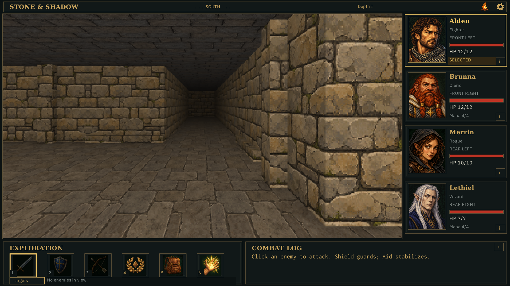

Less ground, more of the world
Compare the same three viewpoints with a gentler downward framing.
All options keep the 0.4-cell pullback, 0.5-cell eye height and 84° horizontal field of view.
B · 40% · accepted and in game

Dungeon intersection — B / 40%: accepted and in game, approximately 5.8° downward at screen centre.